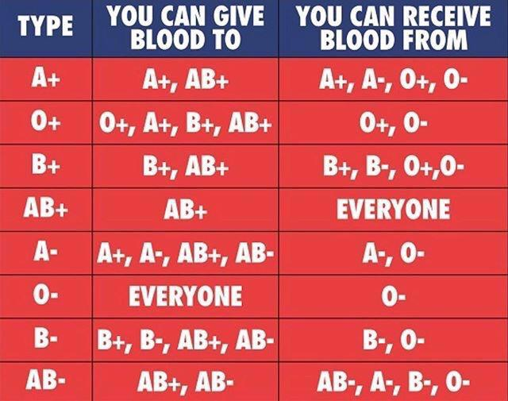

Voluntary blood donation in India can save many lives.To promote voluntary blood donation among the masses, every year on 14th June is observed as World Blood Donor Day.
Blood is the most vital tissue in a human body for
their overall wellness and survival. India being the second largest human resource in the World, but still in deficit of 20 lakh units of blood every year. It is estimated that only one percent of the Indian population comes forward to donate blood. The current situation of the country is that the demand for blood is double than the actual availability.
Donate your Blood and make According to WHO, India was in need of 6 crare a difference
units of blood in 2017, but only half of the units were available. During critical conditions, most of the blood banks in India face the similar challenge of making sufficient blood available. It is also estimated that only 1% of the population (in addition to the already donating) voluntarily donates blood, the demand supply deficit can be curbed down completely.
WHO CAN DONATE.
Guidelines laid down by the Ministry of Health, Government of India have to be followed by blood banks and organizations conducting blood donation camps.
Overall health-
The donor must be fit and healthy, and should not be suffering from transmittable diseases. Age and weight-
The donor must be 18–65 years old and should weigh a minimum of 50 kg.

Pulse rate-
Between 50 and 100 without irregularities. Hemoglobin level-
A minimum of 12.5 g/dL. Blood pressure-
Diastolic: 50–100 mm Hg, Systolic: 100–180 mm Hg. Body temperature-
Should be normal, with an oral temperature not exceeding 37.5 °C. Time period-
The time period between successive blood donations should be more than 3 months. Who can't donate blood- s
1. A perso1n who has been tested HIV positive.
2. Individuals suffering from ailments like cardiac arrest, hypertension, blood pressure, cancer, epilepsy, kidney ailments and diabetes.
3. A person who has undergone ear/body piercing or tattoo in the past 6 months.
4. Individuals treated for rabies or received Hepatitis B vaccine in the past 6 months.
5. A person who has consumed alcohol in the past 24 hours.
6. Women who are pregnant or breastfeeding.
7. Individuals who have undergone major dental procedures or general surgeries in the past 1 month.
8. Women who have had miscarriage in the past 6 months.
9. Individuals who have had fits, tuberculosis, allergic disorders in the past.
10.Individuals who currently have asthma with active symptoms, and severe asthma patients.